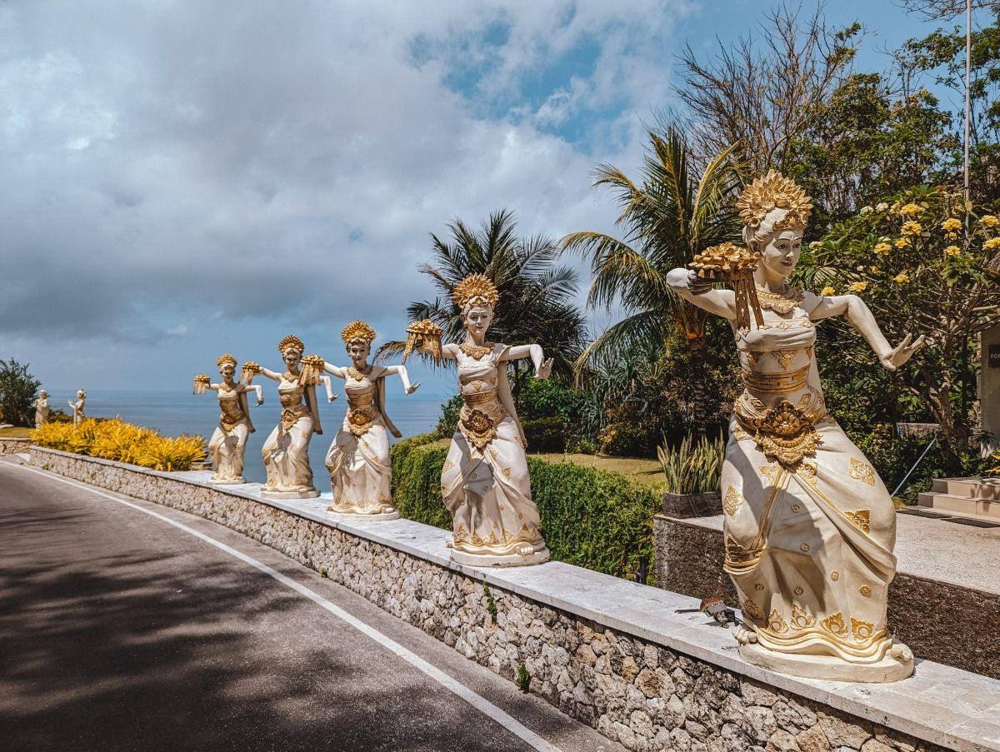
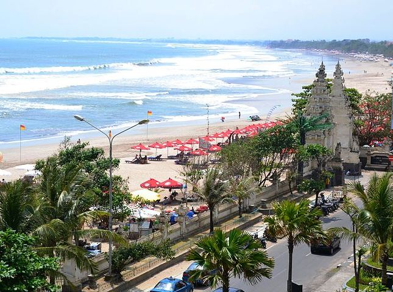
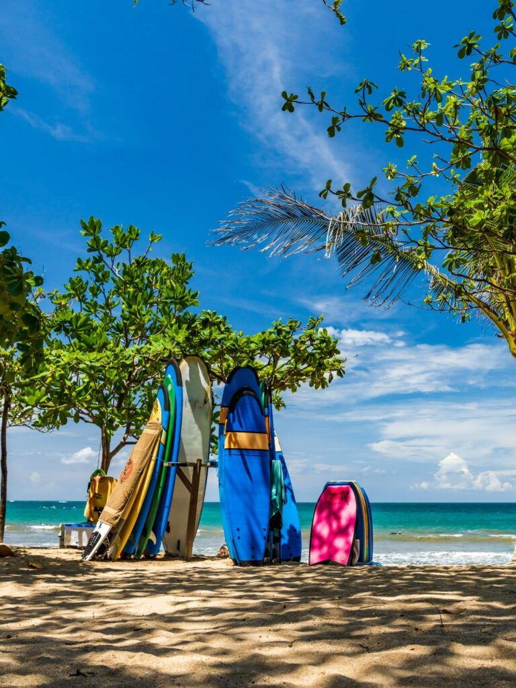

Dulunya, Pantai Kuta adalah desa nelayan yang kemudian berkembang menjadi destinasi wisata utama sejak tahun 1970-an. Sekarang, kawasan ini dipenuhi dengan hotel, restoran, bar, toko suvenir, dan pusat hiburan malam yang ramai. Selain berselancar, wisatawan juga bisa menikmati aktivitas seperti berjemur, bermain pasir, atau berjalan-jalan di sepanjang pantai.
Pantai Kuta juga dekat dengan tempat-tempat wisata lainnya, seperti Legian, Seminyak, dan Waterbom Bali. Karena keindahannya dan lokasinya yang strategis, pantai ini menjadi tujuan favorit bagi wisatawan lokal maupun mancanegara.
SEJARAH PANTAI KUTA BALI
Sebelum menjadi objek wisata, Kuta merupakan sebuah pelabuhan dagang tempat produk lokal diperdagangkan kepada pembeli dari luar Bali. Pada abad ke-19, Mads Lange, seorang pedagang Denmark, datang ke Bali dan mendirikan basis perdagangan di Kuta. Ia ahli bernegosiasi sehingga dirinya terkenal di antara raja-raja Bali dan Belanda.
Selanjutnya, Hugh Mahbett menerbitkan sebuah buku berjudul “Praise to Kuta” yang berisi ajakan kepada masyarakat setempat untuk menyiapkan fasilitas akomodasi wisata. Tujuannya untuk mengantisipasi ledakan wisatawan yang berkunjung ke Bali. Buku itu kemudian menginspirasi banyak orang untuk membangun fasilitas wisata seperti penginapan, restoran dan tempat hiburan.
 SEJARAHPARIWISATA
Pantai Kuta terkenal memiliki ombak yang bagus untuk olahraga selancar (surfing),terutama bagi peselancar pemula. Selain keindahannya, wisata pantai Kuta juga menawarkan berbagai jenis hiburan seperti bar, restoran, pertokoan, restoran, hotel, dan toko-toko kelontong, serta pedagang kaki lima di sepanjang pantai menuju Pantai Legian.
AKSES
Pantai Kuta dapat ditempuh dengan waktu sekitar 10 menit dari Bandara Internasional Ngurah Rai dalam kondisi jalanan lancar.
 PARIWISATAFASILITAS
Sebagai tempat wisata pantai, pantai Kuta dilengkapi lahan parkir di sepanjang pantai, kamar mandi umum, payung pantai, kios makanan dan minuman, serta tempat penyewaan papan selancar.  FASILITAS
PERMASALAHAN SAMPAH
Setiap tahun, pengunjung pantai Kuta kerap mengeluhkan masalah kebersihan dan tumpukan sampah di pantai Kuta, terutama saat musim liburan. Hal tersebut mempengaruhi penilaian wisatawan domestik maupun manca negara terhadap citra pantai Kuta.Selain disebabkan aktivitas pengunjung dan penjual di sepanjang pantai Kuta, sampah-sampah di pantai Kuta juga diakibatkan hembusan angin barat setiap tahunnya yang membawa sampah dari muara-muara sungai terdekat ke pantai.